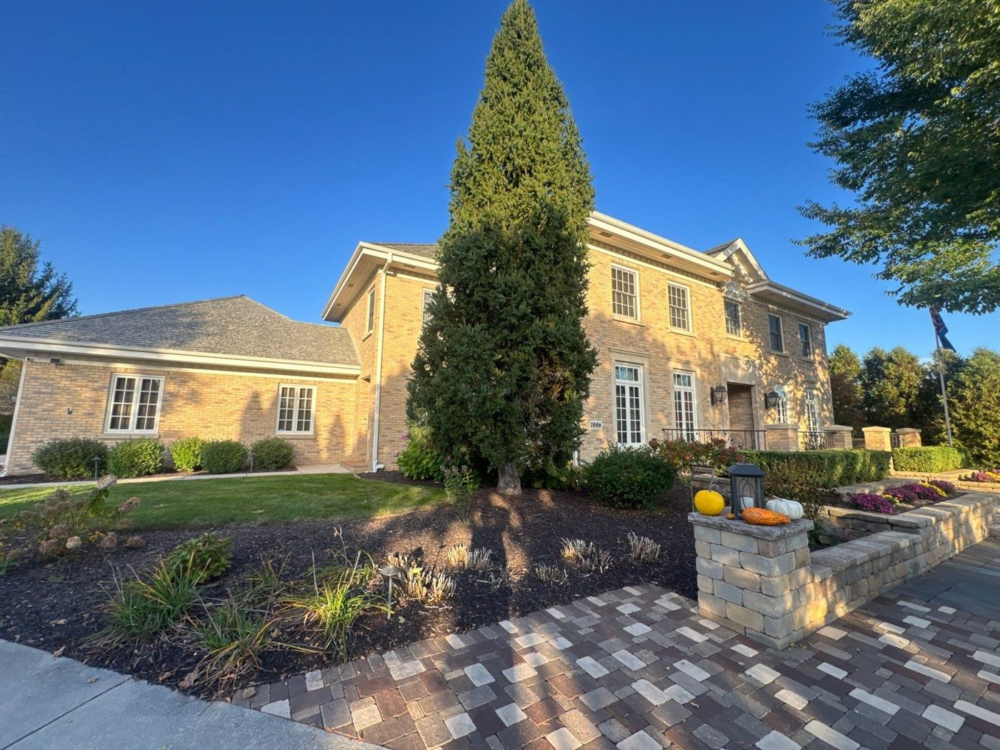
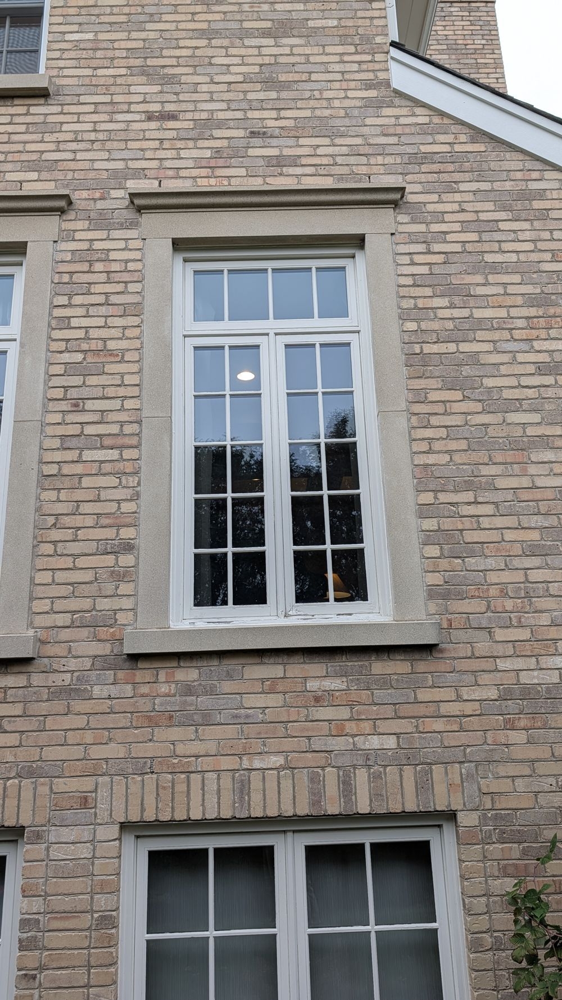
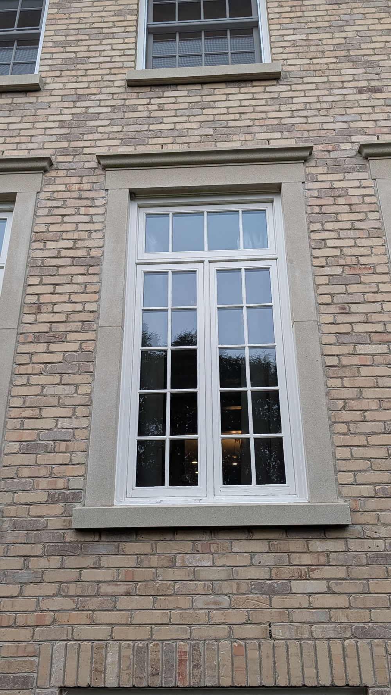
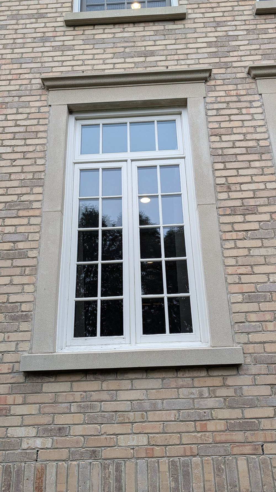
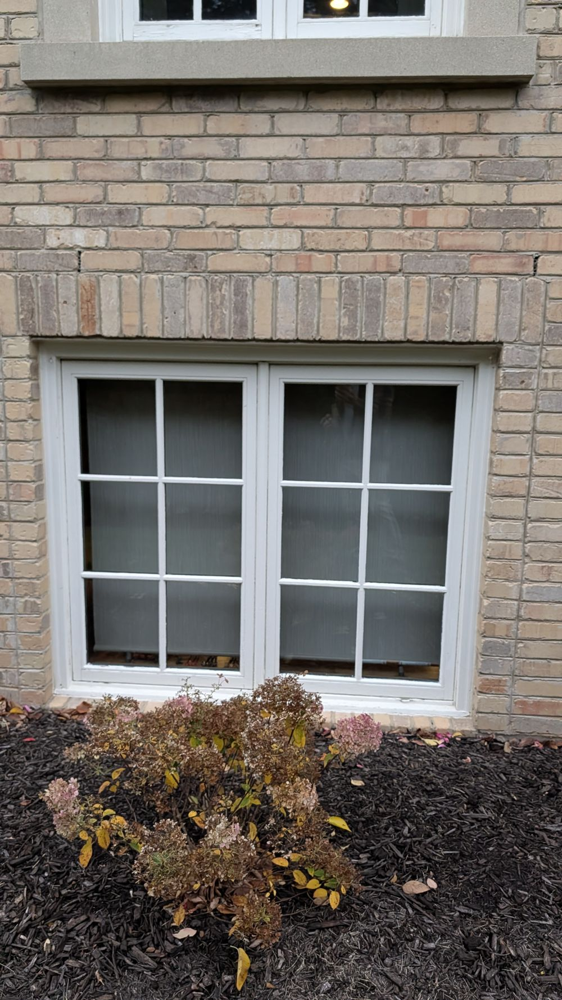
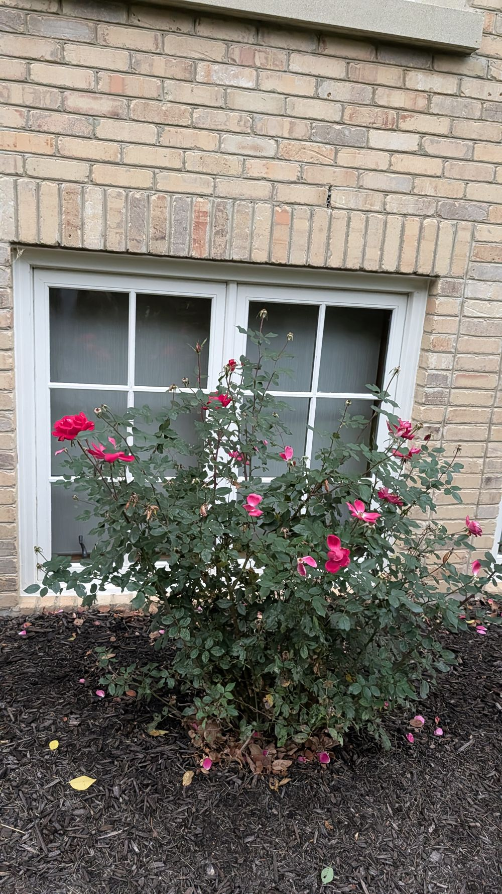
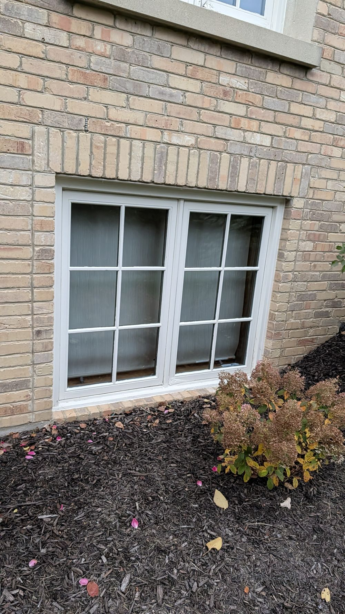
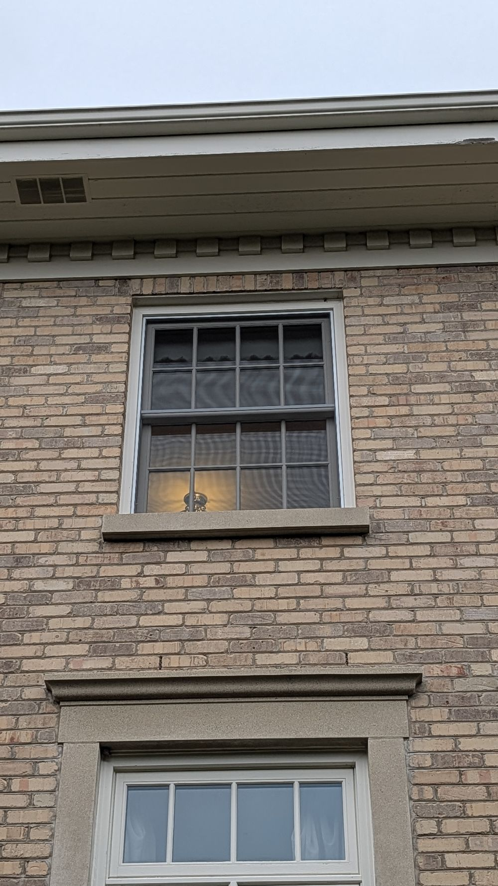
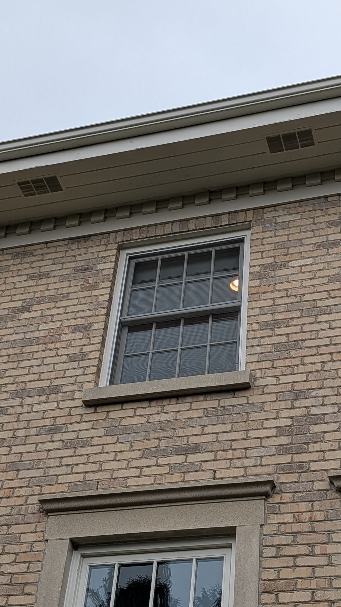
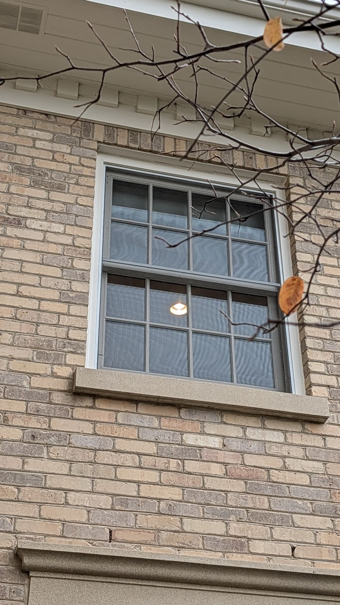

Phase 1 · Windows · 1006 N Blue Spruce Circle
Phase 1: South Side Windows
This is Phase 1 of replacing the windows in your home. We're starting on the south side of the house: four windows in the living room on the first floor, three in the lower-level game room, and three in the upstairs craft room. Every window is a Pella Lifestyle Series, a wood window with an aluminum-clad exterior, so you keep real wood on the inside and a low-maintenance finish outside. Every window gets the same Linen White exterior. Inside, each window keeps the look it has now: stained windows stay stained in Early American, and white windows stay white (Linen White), so each room matches as more windows are done.
These are full-frame replacements. The old window comes out frame and all, and the new window goes into the rough opening. To keep your interior trim, we leave the interior jamb extensions and casing in place and set the new window to them.
Remove the existing windows, frame and all, at each opening
Keep the existing interior jamb extensions and casing in place
Set, shim, fasten, flash and insulate each new Pella Lifestyle window
Seal the exterior to the brick
Haul away the old windows and all job debris
Window Schedule (width x height)
| Room | Type | Size | Qty |
|---|
| Living Room | 2-wide casement + transom | 39-1/2" x 81-1/2" | 4 |
| Game Room | 2-wide casement | 55-1/2" x 46-1/2" | 3 |
| Craft Room | Double hung | 40" x 53-1/2" | 3 |
| Total | | | 10 |
Every window
What every window gets
WindowPella Lifestyle Series
Exterior colorLinen White
InteriorMatches existing: Early American stain or Linen White
HardwareBrown
GrillesSimulated divided light
Living room and game room windows are stained today, so they get the Early American interior. The craft room windows are white today, so they get a Linen White interior.
Your Home

Back of the home
First Floor · South Side · Living Room
Four Casement Pairs with Transoms
The four living room windows are identical: a pair of casements side by side with a fixed transom window above. The new Pella Lifestyle units keep that same layout and grille pattern, working left to right across the wall.
Full-frame removal of all four units
New two-wide casement with transom above at each opening
Existing interior jamb extensions and casing stay in place
Outside

Living room, exterior

Living room, exterior

Living room, exterior
All four · same size
Living Room Windows
Quantity4
StyleTwo-wide casement with transom
Overall frame size39-1/2" W x 81-1/2" H, including transom
Transom height19"
Casement grilles2 x 5
Transom grilles1 x 4
WindowPella Lifestyle Series
Exterior colorLinen White
InteriorEarly American stain
HardwareBrown
GrillesSimulated divided light
InstallationFull-frame replacement
Lower Level · Game Room
Three Casement Pairs
The three game room windows on the lower level are identical two-wide casements. They get the same colors and simulated divided light grilles as the rest of the house.
Full-frame removal of all three units
New two-wide casement at each opening
Existing interior jamb extensions and casing stay in place
Outside

Game room, exterior

Game room, exterior

Game room, exterior
All three · same size
Game Room Windows
Quantity3
StyleTwo-wide casement
Overall frame size55-1/2" W x 46-1/2" H
Grilles2 x 3
WindowPella Lifestyle Series
Exterior colorLinen White
InteriorEarly American stain
HardwareBrown
GrillesSimulated divided light
InstallationFull-frame replacement
Second Floor · Craft Room
Three Double-Hung Windows
The three craft room windows upstairs are identical double hungs. These windows are white inside today, so they get a Linen White interior to match, with brown hardware and a tan jamb liner. These are ordered without a lift rail.
Full-frame removal of all three units
New double-hung window at each opening
Existing interior jamb extensions and casing stay in place
Outside

Craft room, exterior

Craft room, exterior

Craft room, exterior
All three · same size
Craft Room Windows
Quantity3
StyleDouble hung
Overall frame size40" W x 53-1/2" H
Grilles4 x 2, simulated divided light
WindowPella Lifestyle Series
Exterior colorLinen White
InteriorLinen White
HardwareBrown
Jamb linerTan
Lift railNone
InstallationFull-frame replacement
Option · All Windows
Full Screens or Roll Screens
Every window comes with a standard full screen. As an option, we'll price Pella Rolscreen retractable screens, which roll out of sight when the window is closed and roll down when you open it. You get a clear view through the glass most of the year and a screen only when you want one.
Standard: full screen on every window
Option: Rolscreen retractable screens, priced separately on your estimate
Pricing for both screen choices will be on your written estimate so you can compare.
Finishing
Interior Touch-Ups Where Needed
Because we're keeping your interior jamb extensions and casing, the new windows tie into the existing trim. Where the mullions (the vertical bars between units) meet the jamb extensions, there may be some marks or scarring left behind once the old windows are out. If so, we'll bring in our finishing partner to touch those spots up so they blend in.
Touch-up where the mullions meet the existing jamb extensions, as needed
Matched to your existing interior finish
Who Does the Work
Boechler Painting and Restoration
Travis and his crew handle the finishing on our projects. We coordinate the schedule so the touch-ups follow the window installation.
We won't know exactly how much touch-up is needed until the old windows are out. This covers touch-up at the window openings only.
Next Steps
Here's Where We Go From Here
Nothing more is needed from you right now. Here's the process from here.
1
We'll send the window sizes and options to Pella for pricing.
2
Once Pella's quote is back, we'll put together your estimate with materials and labor.
3
You'll get the estimate by email through Jobber. Look it over and reach out with any questions.
4
Once it's approved, we'll order the windows and get you on the schedule.